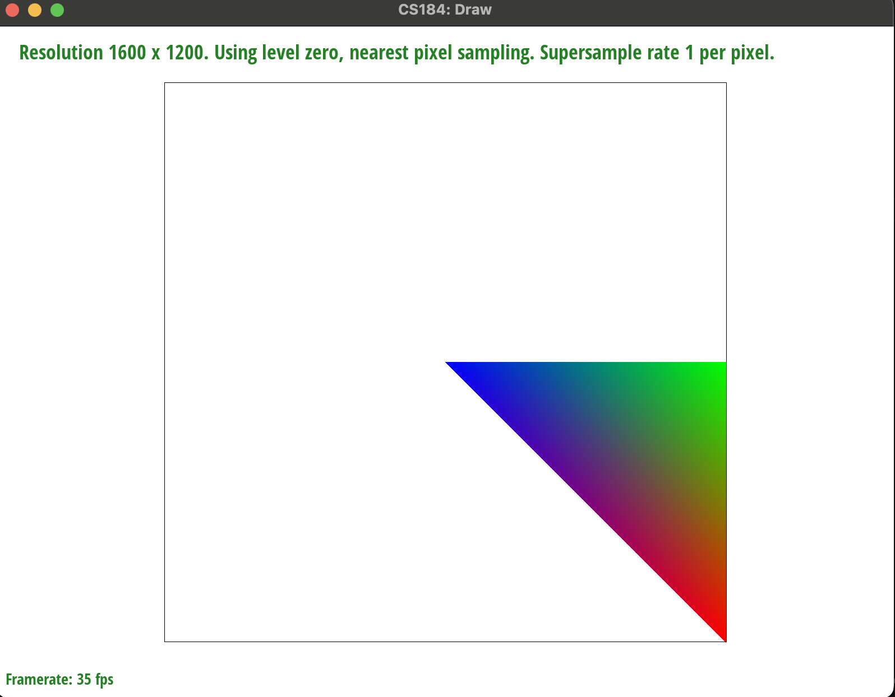
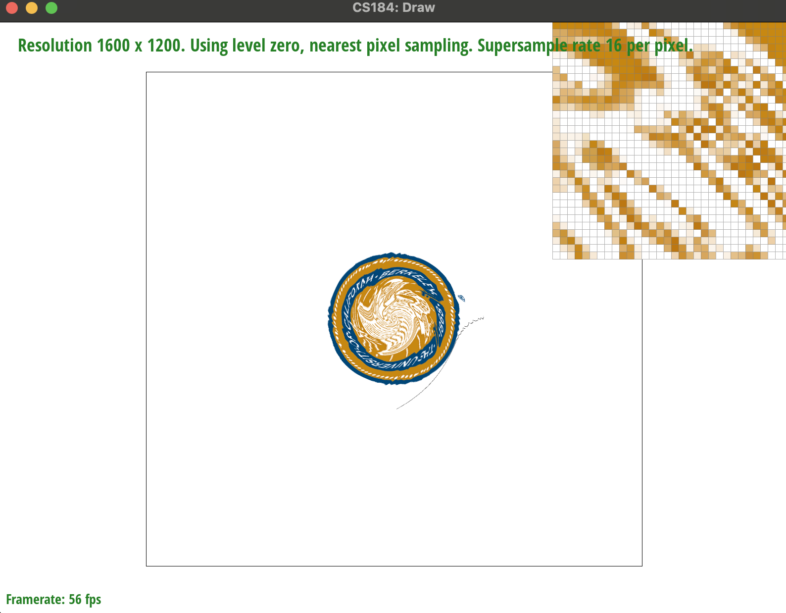

Overview
Give a high-level overview of what you implemented in this homework Think about what you've built as a whole. Share your thoughts on what interesting things you've learned from completing the homework.
Section I: Rasterization
Part 1: Rasterizing single-color triangles
Firstly, I determine the bounding box of the triangle by flooring the values and taking the minimums and maximums. I also check to make sure that the bounding box is within screen space. I then iterate through the bounding box, calculate the barycentric coordinates of the center of the pixel, and check if it is within the triangle or not. If it is, I fill the pixel with the given buffer.
Since the algorithm only iterates through each pixel in the bounding box, rather than the entire screen, it performs at exactly the same speed as an algorithm that checks each sample in the bounding box.

|
Part 2: Antialiasing triangles
My supersampling algorithm iterates by the root of the sampling rate and determines whether the sample point is within the triangle or not using barycentric coordinates. Instead of filling the pixel, the samples are added to the sample buffer, which is sized based on the sample rate. Then, the pixel value in the frame buffer is determined as an average of the sampling points to build the pixel. Supersampling antialiases the triangles by smoothing edges to give a more accurate pixel representation of a straight triangle edge, rather than jagged absolute pixels.
|
|

|

|
These results are observed because as the number of samples per pixel goes up, there are more shades available (i.e instead of 1, 2, 3, or 4 samples in triangle, or instead have anywhere between 0 and 16). Since there are more sampling points, there is a more variable gradient that can better represent the straight edge of a triangle in pixel space.
Part 3: Transforms

|
Cube man doing the splits. I used chat gpt to get a better understanding of the transformations, was able to understand the skeleton code pretty fast and output the right transformations.
Section II: Sampling
Part 4: Barycentric coordinates
|

|
Barycentric coordinates are ways of expressing points in terms of their relationships to points on a triangle. Essentially, it is the sum of two vectors with the same direction as two of the sides of the triangle, where the varying magnitudes determine where the point lies. This allows us to both easily determine whether a point is within the triangle or not (are both the vectors greater than zero, and they sum to under one), as well as interpolate across the triangle based on its distance to each point.

|
Chat gpt helped me come up with the interpolation formula, but other than that I copied my code from previous rasterizations. I struggled to understand how to properly interpolate and determine color based on the barycentric coordinates, and the explanation from chat gpt helped me build some intuition.
Part 5: "Pixel sampling" for texture mapping
Pixel sampling is the process of determining what the color of a pixel should be based on the image attempting to be rendered. When attempting to apply a texture to a surface, this is done by mapping coordinates on the surface to the texture, sampling the pixel of the apple texture, and using those values to render the image. This can be done by finding the nearest pixel, which rounds the continuous sample coordinates to the nearest pixel, or bilinear, which blends together the closest 4 pixels with appropriate weights based on their distances from the coordinate.
|
|

|

|

|
Nearest pixel sampling creates very blunt edges between colors, resulting in a very jagged look. Bilinear sampling does a better job of capturing the smaller intricate patterns by blending pixels appropriately. There is less of a difference when super sampling is used, and it is not noticeable when there are large shapes of the same shade. Therefore, bilinear sampling is more valuable when there is less super sampling and when there are smaller intricate patterns to capture
Chat GPT helped me implement the sampling methods, and made it clearer how to perform the interpolation between texels on bilinear sampling.
Part 6: "Level sampling" with mipmaps for texture mapping
Level sampling used mip maps in order to sample textures based on the perceived distance from the ‘camera’. So for parts of the texture that are more zoomed in and stretched, the sample is taken from a higher resolution image, while parts of the texture that are more squished and zoomed out will be taken from a lower resolution level. This is done by determining the rate of change of pixels at certain points and determining the mip map level based on it.
Switching between different pixel sampling methods allows one to determine at what speed the image is rendered. Basic ones like the nearest pixel are incredibly fast to compute but fall short of capturing intricate details and fall victim to jaggies and moire patterns. Bilinear sampling is more expensive but allows for blending without needing to sample more than once per pixel.
Level sampling allows for another more efficient way to better render textures without having to add more samples. By using pre-generated mipmaps to demonstrate zooming in or out, the texture can be rendered fairly accurately. While leveling sampling adds some time and space overhead, it allows for smoother rendering, especially when calculating a continuous value for the mip map level.
Supersampling is perhaps the most straightforward and effective way to render a texture accurately and surpass moire patterns and jaggies, but it is significantly more expensive. Each additional sample needs to be computed and stored and then blended to produce the image.
Ultimately, the best combination of these settings depends on the computing costs and the level of detail needed on the image.
The way I implemented this was to get the barycentric coordinates of the points (x, y), (x+1, y), and (x, y+1). I interpolated along the uv coordinates and found the respsective vectors, and passed this to sample. Sample calls get_level which finds the difference vectors, scales them according to the texture, and finds the correct mip map level from the formula in class. This then calls a sampling method that uses the mip map level given to sample the texture.

|

|

|

|
I struggled with this problem. I didn’t understand how mipmapping worked, and building the intuition for uv coordinates took a while. I attempted to use chat gpt to help, but it could not get the interpolation right. Took a few hours of experimenting and starting at the spec to understand. Ran into several bugs, where I forgot to adjust for the texture size, or forgot to pass in the levels and sampling arguments. Ultimately got everything to work through trial and error.
Section III: Art Competition
If you are not participating in the optional art competition, don't worry about this section!